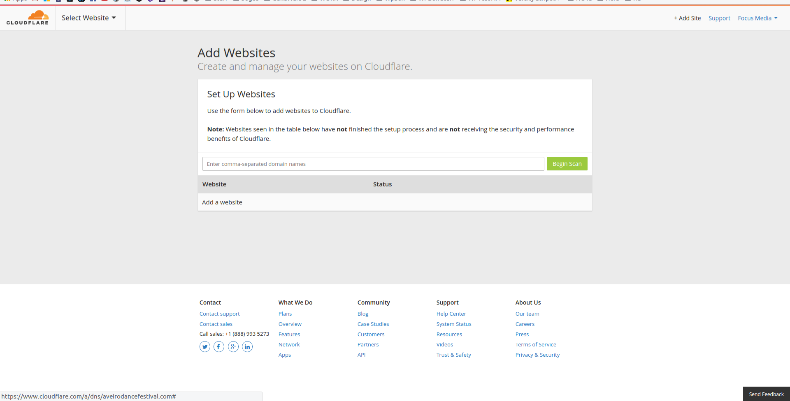
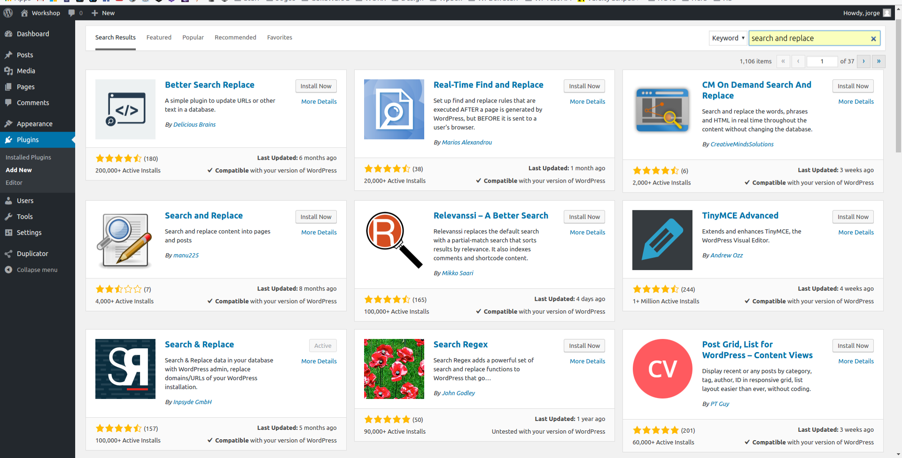

O que aprendemos até aqui?
O que é um blog?
- Pode ser um diário digital
- Um sitio para escrever as nossas notícias
- Um repositório de fotografias
Como as empresas utilizam os blogs?
- Promover os seus conteúdos
- Comunicar atividades e promoções
- Abrir ofertas de emprego
O que podemos fazer com WordPress?
- Uma rede social
- Uma loja online
- Um site de anúncios
- Um site de ofertas de emprego
- ...
Porquê utilizar o WordPress em vez de outras plataformas?
- https://ma.tt/
- https://www.smartpassiveincome.com/
https://premium.wpmudev.org/blog/
http://www.wpbeginner.com/
https://www.wp101.com/
Deployment de um site
Instalar e Activar o plugin "Duplicator" no site desenvolvido localmente

Criar um novo package no plugin e seguir os passos
Fazer download dos ficheiros criados (Ficheiros do site e Base de Dados)
Aceder ao cPanel e selecionar o Administrador de Ficheiros

Fazer upload dos ficheiros do site
No cPanel ir ao phpMyAdmin
Na tabela "options" alterar os URL's
Adicionar novo site na Cloudflare
Adicionar DNS's para o novo site

Para colocar HTTPS na Cloudflare é necessário adicionar uma "Page Rule"

No novo site, adicionar o plugin "Search & Replace" para subsituirmos todos os url's
Executar uma pesquisa na base de dados a subsituir o antigo URL pelo novo

Uma lista que todos deviamos correr quando colocamos um site online
http://wpsecuritychecklist.org/br/items/